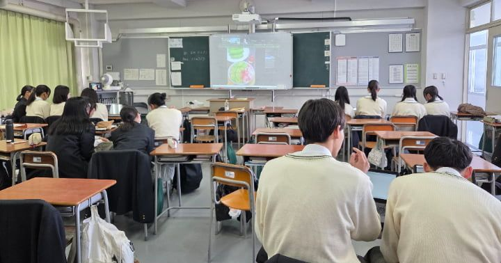
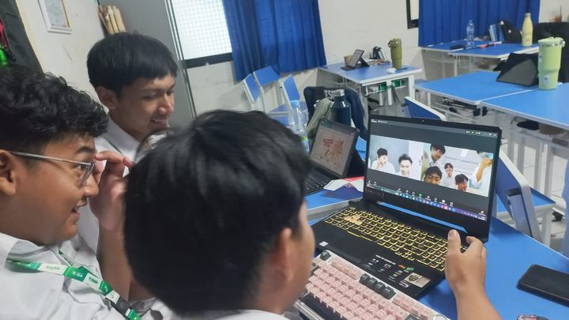
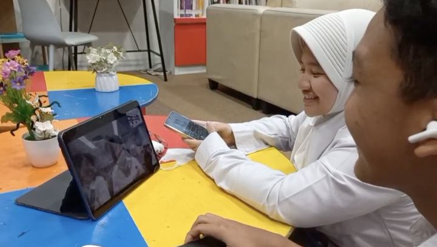

徳島県教育委員会の事業として、徳島北高等学校の2クラスとインドネシアの高校をつなぐオンライン交流TOMODACHIプログラムを5ヶ月間実施
徳島県立徳島北高等学校と、インドネシア・ジャカルタ首都圏 南ジャカルタ市の MA Pembangunan UIN Jakarta をつなぎ、両国合わせて142名の高校生が参加。2学期から3学期にかけての約5ヶ月間、海を越えて継続的に英語で対話を重ねました。

日本・徳島県
徳島県立徳島北高等学校
国際英語科2年・普通科2年
各1クラス／計80名
時差2時間
インドネシア・ジャカルタ
MA Pembangunan UIN Jakarta
高校2年・高校3年
各1クラス／計62名
- 事業
- 徳島県教育委員会「徳島と世界をつなぐグローカルリーダー育成事業」オンライン交流プログラム（2025年度）
- 実施校
- 徳島県立徳島北高等学校（国際英語科2年・普通科2年 各1クラス）
- 海外協力校
- MA Pembangunan UIN Jakarta（インドネシア・ジャカルタ首都圏 南ジャカルタ市／高校2年・高校3年 各1クラス）
- 実施期間
- 2025年10月〜2026年2月（約5ヶ月・2学期〜3学期）
- 実施回数
- 各クラス6回（1回40〜45分）＋事前の接続テスト
- 参加生徒
- 計142名（日本80名／インドネシア62名）
- 形式
- オンライン
- 使用ツール
- Zoom、Padlet、Google Slides
背景
徳島県教育委員会が「海外の高校とのオンラインによる交流プログラムを通して多文化理解を深め、主体的にコミュニケーションを図ろうとする生徒の育成を図る。」という目的を掲げ、弊社は海外協力校の選定から当日の運営までを一括して担当しました。
設計上の要点は、単発の交流にしないことでした。2学期から3学期にかけて6回に分け、各回のあいだに振り返りと次回の準備を挟むことで、生徒が前回の会話を踏まえて次の話題を組み立てられる構成としています。
協力校には、MA Pembangunan UIN Jakarta の日本語クラスを選定しました。日本語を学んでいる生徒は挨拶や簡単なフレーズを日本語で話すことができ、日本の文化に関心を持つ生徒も多いため、初回から会話が弾みやすい傾向があります。加えてインドネシアでは英語を第二言語として学ぶため、対話は双方にとって母語ではない英語で進みます。速度や語彙の面で歩み寄りが生まれやすく、英語に不安のある生徒でも発話の機会を得やすい環境となりました。
実施内容
英語の授業時間を用い、国際英語科は火曜日の7限目（15時00分〜15時40分・40分間）、普通科は月曜日の5限目（13時10分〜13時55分・45分間）に実施しました。時差2時間のジャカルタ側では、それぞれ13時台・11時台にあたります。日程はテスト期間と学校行事を避けて組んでいます。
テーマは両クラス共通の異文化理解に加えて、国際英語科は徳島とジャカルタの交通、普通科は身近な流行と現代文化を設定しました。
-
Day 0
事前案内・接続テスト
Zoomの操作を確認し、通信状況を事前にテスト。生徒には自己紹介と国・学校紹介の準備を案内しました。
-
Day 1
オリエンテーションと文化紹介
両校の代表生徒が、それぞれの国・文化・学校生活を紹介。その後、少人数で短いグループ交流を行いました。
-
Day 2
グループ交流①
生徒は3〜4名のグループに分かれ、相手校の2グループと1グループあたり15〜20分ずつ交流します。趣味や地元徳島の情報を事前にオンライン掲示板へ投稿しておき、当日は画面を共有しながら紹介しました。
-
Day 3
グループ交流②
Day 2と同じ相手グループと再び交流します。前回の会話を踏まえて質問を作成し、事前に投稿したうえで臨むことで、初対面のやりとりで終わらせず話を掘り下げました。
-
Day 4
グループ交流③（テーマ別）
クラスごとに設定したテーマに沿って、2グループと交流。交通や流行について、それぞれが調べた内容を掲示板で共有したうえで話し合いました。
-
Day 5
グループ交流④
Day 4と同じ相手グループと、同じテーマで継続。前回出た話題への質問を持ち寄り、両国の違いと共通点を整理しました。
-
Day 6
ミニプレゼンテーションと集合写真
グループごとに、相手校から学んだことをまとめて発表。最後に全員で記念撮影を行いました。


ジャカルタ側の教室の様子（MA Pembangunan UIN Jakarta ご提供）
各回、弊社の言語アシスタントがグループを巡回し、英語に不安のある生徒に声をかけています。
先生方との役割分担
海外校との折衝および当日の運営は弊社が担当し、教室での対応と生徒への働きかけを先生方にお願いする形で分担しました。
AirPangaeaが担当
- 海外協力校の開拓と折衝
- 両校の学事日程・行事・テスト期間を踏まえた日程調整
- オンライン掲示板とワークシートの準備
- グループ分けのフォーマット提供
- 当日の進行と言語サポート
- アンケートの実施・集計、実績報告書の作成
先生方にお願いしたこと
- 交流時間の確保
- グループ分けの確定（弊社のフォーマットをもとに、ご相談しながら決定）
- 教室での見守りと生徒への声かけ
- 交流後の振り返りと次回の準備（弊社から資料を提供）
当日の教室の状況を最初に把握できるのは先生方です。気づかれた点をその場でご共有いただけたことで、進行の調整を速やかに行うことができました。日程の変更が必要になった回についても、先生方とご相談のうえ、振替の授業時間を確保しています。
アンケート結果
プログラム終了後、日本側の参加生徒80名を対象にアンケートを実施しました。
問：本プログラム参加前と比べて、今感じていることを5段階評価で教えてください
「そう思う」「強くそう思う」の合計／有効回答76
問：プログラムの満足度を5段階評価で教えてください
「満足」「とても満足」の合計／有効回答76
問：本プログラムにもう一度参加したいと思いますか（複数選択可）
「同じ相手国」「異なる相手国」「異なるテーマ」のいずれかを選択／有効回答76
英語学習のモチベーションは73%と、3項目の中では最も低い数字でした。自由回答からは、相手校の生徒の英語力に触れて学習意欲を高めた生徒がいる一方、聞き取れずに会話が続かない場面を経験し、手応えを得られなかった生徒もいたことが読み取れます。6回という回数の中で、参加した全員の意欲を押し上げるには至りませんでした。
生徒の声
- 英語が本当に苦手で、今回のことも正直あまり乗り気ではなかったのですが、ジェスチャーを使うなどすると意外と通じたし、相手の言葉も友達の力を借りてですがかなり理解できたので、想像よりもとても楽しかった。
- 今までは外国人に対して少し遠い存在のように感じていたけれど、自分たちと同じような趣味があって自分と似ているところもあると感じた。
- 相手の英語が流暢すぎて自分たちはまだまだ遠く及ばないと思った。英語力もコミュニケーション力ももっと向上させなければと思った。
課題
音声・通信
自由回答には、相手校の音声が聞き取りにくかったという声が寄せられました。日本側は途中で機材を追加して改善しましたが、回線状況によっては聞き取りづらさが残る回もありました。次年度以降は、通信経路の分散と、より余裕を持った教室の手配により、改善を図ってまいります。
交流の回数と時間
「仲良くなりかけたところで終わってしまう」という声が複数ありました。もっと話したいという要望として受け止めています。
2年目
2026年度も徳島県教育委員会の同事業を担当し、県内の高校2クラスを対象に準備を進めています（2026年10月開始予定）。
同じような取り組みをご検討の方へ
実施できる時期や規模は、学校の授業時間と相手校の学事日程によって変わります。まずは、想定されているクラス数と時期をお聞かせください。
お問い合わせ